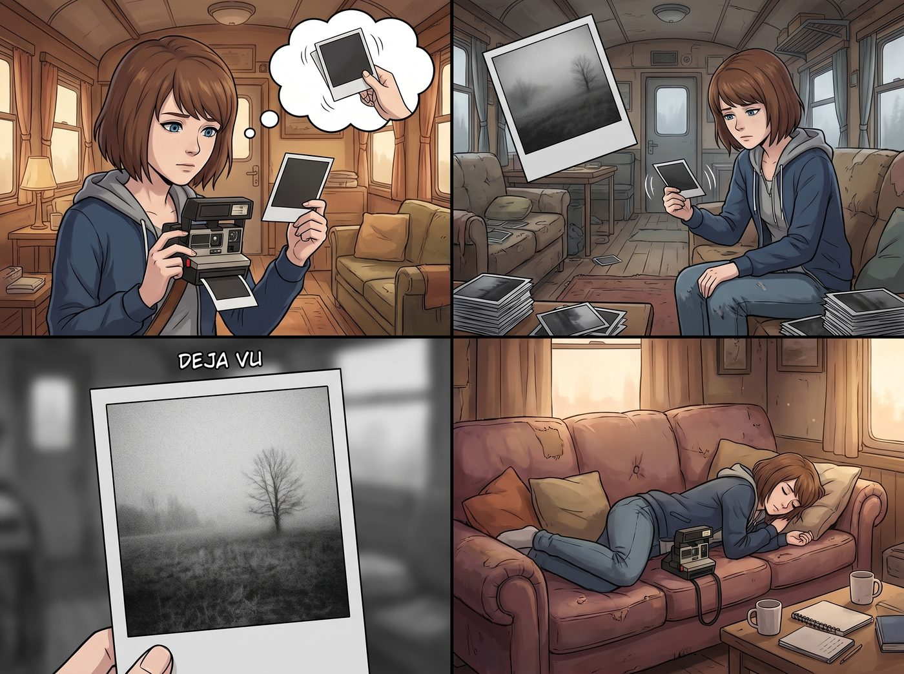
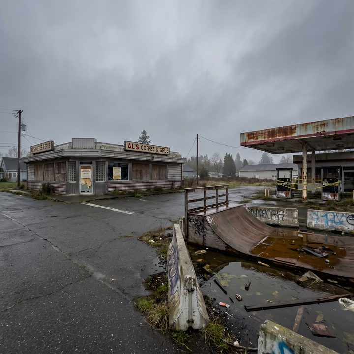
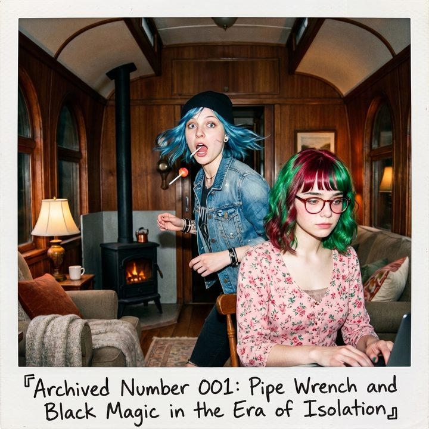

方舟裡的標本室



奧林匹亞半島的霧氣，在2021年的春天顯得格外沉重。
Max 舉著她那台邊角已經磨損的寶麗來相機，站在距離二號車廂十幾公里外的一個荒廢小鎮十字路口。這裡曾經有一家總是散發著廉價咖啡香的公路餐廳，還有一個總是有滑板少年聚集的破舊加油站。
但現在，這裡是一座名副其實的鬼城。
一、閾限空間
餐廳的玻璃窗上貼著一張邊緣已經捲曲發黃的告示：「為配合防疫，本店暫停營業兩週。」這張兩週前的告示，已經在風雨中掛了整整十一個月。加油站的油槍被黃色的警戒線死死纏住，曾經充滿塗鴉的滑板U型池裡積滿了發臭的雨水。
「喀嚓。」相機吐出一張相紙。Max 輕輕甩著，等待顯影。畫面浮現出來，灰暗、空曠，帶著一種令人毛骨悚然的既視感。
這已經是她這個月拍的第三十張空無一人的照片了。
回到二號車廂時，Max 疲憊地將相機扔在沙發上，把自己重重地摔進柔軟的靠墊裡。
「又去拍世界末日了，Max？」Chloe 嘴裡叼著一根棒棒糖，因為買不到香菸的替代品，手裡拿著砂紙正在打磨一塊金屬零件。
「不然還能拍什麼？」Max 沮喪地揉了揉頭髮，「西雅圖去不了，波特蘭在宵禁。外面除了樹就是長滿青苔的廢棄店鋪。我試著去拍大自然，拍那些高聳的紅木和麋鹿……但我不是國家地理的攝影師啊，Chloe。我的鏡頭需要人，需要情緒，需要那種活生生的、充滿瑕疵的瞬間。看著那些鬼城一樣的街道，我只覺得我的靈感正在跟著這個世界一起枯竭。」
更讓 Max 焦慮的是，寶麗來相紙的供應鏈徹底斷裂了。網路商店的相紙一直顯示缺貨，二手拍賣網站上的黃牛把一盒過期的底片炒到了六十美金。她抽屜裡的存貨只剩下最後三盒，每一按下快門，她都覺得自己在消耗某種不可再生的生命力。
「妳可以拍我啊！」Chloe 得意地擺出一個極度誇張、展現肱二頭肌的健美姿勢，「本大爺三百六十度無死角的街頭頹廢美，絕對能拯救妳的藝術危機。」
在開放式廚房裡揉麵團的 Kate 轉過頭，溫柔地笑了：「Max 也可以拍我新研發的無麩質蔓越莓司康。或者……我們在車廂外弄個小花園？拍植物生長的過程也很有生命力呢。」
Max 苦笑了一下。她知道大家在安慰她，但這就像把一隻習慣了在汪洋大海裡捕魚的海鷗，硬生生關進了一個精緻的魚缸。
二、耗材補助
就在這時，Lily 推著一個沉重的金屬防潮箱，從她的辦公區走了出來。
「Max 學姐，請簽收您的攝影耗材補給。」
Lily 將防潮箱推到 Max 面前，手指在電子鎖上按了幾下。咔噠一聲，箱蓋彈開。
Max 和 Chloe 同時倒抽了一口涼氣。
箱子裡，整整齊齊地碼放著至少三十盒嶄新的寶麗來相紙。
「這……這是什麼？」Max 結結巴巴地問，手已經不由自主地摸向了那些相紙。
「我昨晚在我們跟能源部合作的專案進度表裡，為這個實驗營地新增了一個名為太陽能陣列表面微觀腐蝕度長期視覺建檔的子項目。」Lily 平靜地推了推圓框眼鏡，「這個項目需要每週固定的實體影像紀錄，而寶麗來的即顯成像特性正好符合『不可篡改視覺存證』的要求。我以此為名義申請了一批耗材補助，供應商直接把貨送到了我們的座標。」
Chloe 的眼睛瞪得像銅鈴：「所以妳是靠著幫他們拍太陽能板，換來了整箱的相紙？」
「準確地說，是資源的合規性調撥，Chloe 學姐。」Lily 拿起一盒相紙，遞到 Max 手裡，「根據合規要求，您每週只需要對著外面的太陽能板拍一張照片，作為項目報告的附件。至於剩下的相紙，將被系統自動歸類為『供應鏈冗餘採購』。」
Max 緊緊抱著那一盒相紙，眼眶突然有點發熱。在這個全世界都停擺、連買包衛生紙都要排隊的瘋狂年代裡，這個學妹居然用一點小小的行政巧思，硬生生為她補上了一條藝術的生命線。
三、標本室
「可是 Lily……」Max 輕聲說，「就算有了相紙，外面的世界依然是空的。我不知道該拍什麼了。」
「學姐，您對世界的定義太狹隘了。」Lily 轉過身，指了指這個擁擠卻溫暖的二號車廂。
「外面那個龐大、混亂、正在停擺的世界，確實病了。但您的鏡頭，為什麼一定要對準那些死去的街道呢？」Lily 的目光掃過正在給扳手塗防鏽油的 Chloe，掃過正在烤箱前小心翼翼測試溫度的 Kate，最後落回 Max 身上。
「當外面颳起這場漫長的風雪時，方舟內部，才是人類文明最後的標本室。」
Lily 走回她的多螢幕工作站，瑩藍色的數據光芒照亮了她那張毫無破綻的臉：「您不需要去鬼城裡尋找那種空曠的疏離感。您只需要記錄在這個疫情隔離區裡，Chloe 學姐如何因為修不好發電機而暴躁地踢翻垃圾桶，Kate 學姐如何為了讓大家開心而研發出十種不同口味的燕麥餅乾，以及我們如何在這個被世界暫時遺忘的角落裡，建立起屬於自己的生存法則。」
「多年後，當人們想要回憶起這段大隔離時代時，他們不會想看西雅圖空蕩蕩的街道——那種照片新聞庫裡多得是。他們會想看的，是這本由妳親手留下的、名為《二號車廂生存指南》的寶麗來相冊。」
四、快門聲
Max 愣在原地。那種困擾了她幾個月的窒息感，突然像被某種極度鋒利的邏輯切開了。
她看著手裡那盒相紙，轉過頭，看著正把棒棒糖咬得嘎嘣作響的 Chloe，和正在給餅乾擠糖霜的 Kate。外面依然是冰冷的雨水和隔絕一切的病毒，但車廂裡，卻是高密度的、濃烈得化不開的生活。
「咔嚓。」Max 舉起相機，沒有任何預警地按下了快門。
閃光燈亮起，捕捉到了 Chloe 驚訝轉頭時嘴裡掉下來的棒棒糖，以及旁邊 Lily 依然在鍵盤上運指如飛、連頭都沒抬的絕對冷靜。
相紙緩緩吐出。照片上的畫面帶著一種粗礪又充滿張力的質感，將 Chloe 的狂野和 Lily 的精密完美地定格在同一個畫框裡。
這不是一幅大自然風景，也不是一張空無一人的鬼城寫真。這是一張屬於方舟的全家福碎片。
「嘿！我還沒擺好姿勢呢！」Chloe 撿起地上的棒棒糖大聲抗議。
Max 笑了。幾個月來，她第一次笑得如此輕鬆。她將那張帶著化學藥水氣味的相紙貼在背後的軟木板上，拿起馬克筆，在相紙白色的邊框下寫下一行小字：
『存檔編號001：隔離時代的管鉗與黑魔法。』
她轉過身，將那盒相紙裝進相機，眼神重新煥發出那種屬於觀察者的敏銳光芒。「準備好成為歷史標本了嗎，各位？」